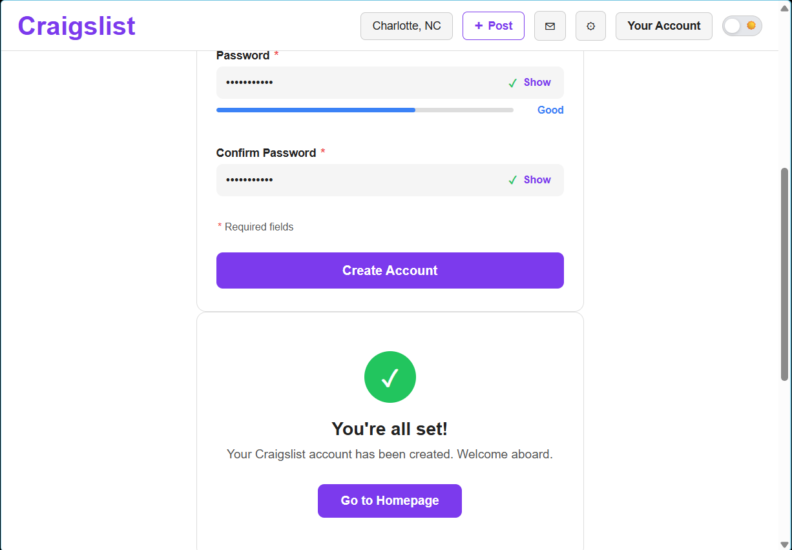

Week 11 – Form Validation & User Feedback
Overview
In Week 11, we implemented a functional sign-up form with real-time validation and inline feedback. The goal was to create a form experience that guides users toward correct input rather than relying on post-submission errors.
My Contribution
I contributed to the design and implementation of the sign-up flow, focusing on validation behavior, user feedback, and ensuring a smooth transition from account creation to logged-in state.
Form Interface

The form includes multiple required fields and provides immediate feedback as users interact with each input.
Real-Time Validation
- Validation triggers on input and field interaction
- Password strength is displayed dynamically
- Confirmation password ensures matching input
- Errors are caught before form submission
This approach prevents user frustration by identifying issues early and guiding users to correct them immediately.
Inline Feedback
- Error messages appear directly next to inputs
- Messages explain how to fix the issue
- Visual indicators (checkmarks, progress bars) confirm valid input
Feedback is designed to be helpful and clear, reducing confusion and improving form completion rates.
Success State
After successful submission, users are shown a confirmation message indicating that their account has been created.
- Clear success confirmation screen
- Call-to-action to return to homepage
- Visual reinforcement with success icon
Persistent User State
After account creation, the interface updates to reflect the user's new status. The “Sign Up” button is replaced with “Your Account” across pages, creating a consistent and persistent experience.
- Header updates after sign-up
- User state maintained across pages
- Navigation reflects logged-in experience
Design Impact
This implementation improves usability by guiding users through the form process with immediate feedback and clear validation. The result is a smoother, more intuitive experience that reduces errors and increases user confidence.